Gestione Minimi e Massimi
Il portale delle Smart Guide è uno spazio digitale che raccoglie risorse pratiche e aggiornate in un unico ambiente intuitivo. Strumenti chiari e organizzati per organizzarti e trovare subito ciò che ti serve.
01.
Crea nuova configurazione
Panoramica sulla creazione e gestione delle configurazioni Minimi e Massimi.
Punto di accesso
La voce di menù
Dalla dashboard è possibile accedere alle principali sezioni tramite le voci di menu.
Menu a tendina
Cliccando sulla voce "Configurazioni" viene visualizzato un menu a tendina, da cui è possibile accedere a "Minimi e Massimi".
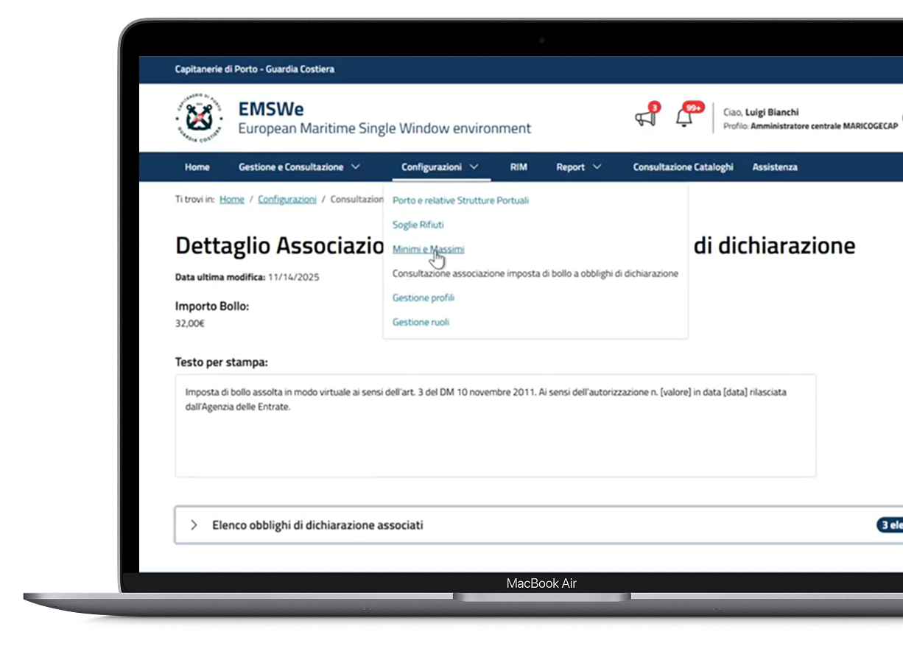
Creazione nuova configurazione Minimi e Massimi
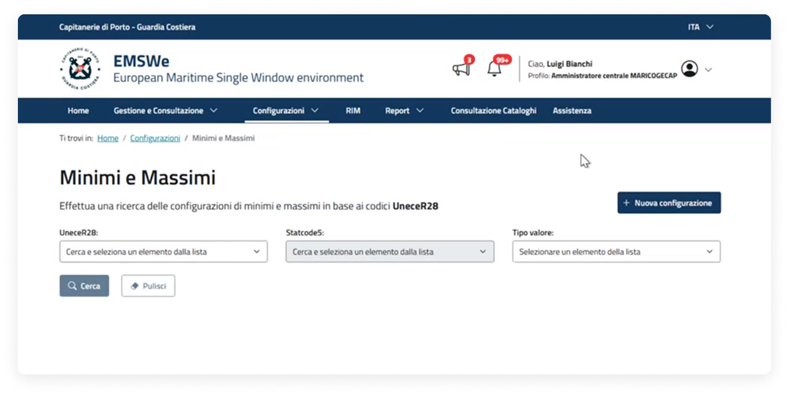
Dopo aver effettuato l'accesso alla pagina "Minimi e Massimi", è possibile avviare una nuova configurazione cliccando sul pulsante "Nuova configurazione".
Passaggi per creare una nuova configurazione
Per creare una nuova configurazione Minimi e Massimi, procedere seguendo i passaggi sottostanti:
Selezione tipologia nave
Per creare una nuova configurazione, è necessario selezionare nel menu a tendina uno dei valori (tipologia nave) all'interno del campo "UneceR28".
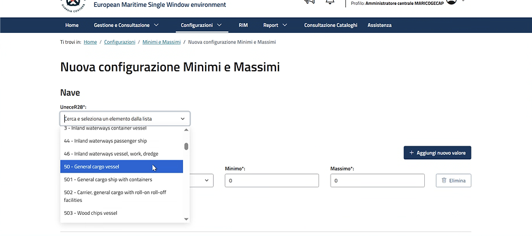
Selezione sottotipi nave
Dopo aver selezionato il tipo nave, il sistema presenta un elenco di Statcode5 (sottotipi navi) associati al tipo nave. Selezionarne uno o più tramite checkbox.
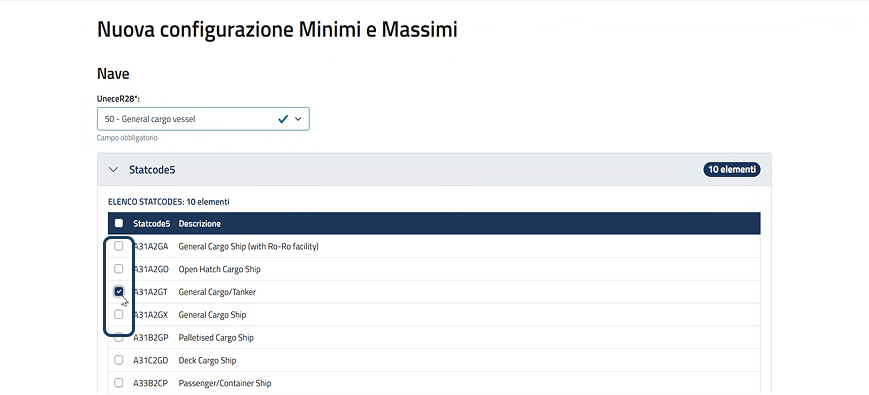
Aggiunta valore (Minimi e Massimi) in elenco
Selezionare nel campo tipo valore uno dei valori disponibili tra "Passeggeri" o "Tonnellate di carico" e successivamente inserire il valore minimo e il valore massimo. È possibile:
- aggiungere un nuovo tipo valore in elenco selezionando il pulsante "Aggiungi nuovo valore";
- eliminare il tipo valore aggiunto, selezionando il pulsante "Elimina".
Dopo l'inserimento dei dati, procedere cliccando sul pulsante "Aggiungi in elenco".
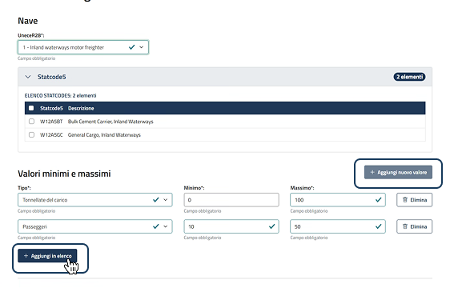
Visualizzazione valori aggiunti
I valori sono mostrati nella tabella sottostante. I valori aggiunti sono associati alla tipologia (50 - General cargo vessel) e al sottotipo di nave (General Cargo/Tanker) selezionati in precedenza.
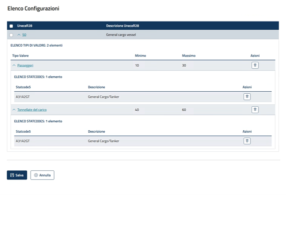
Inserimento nuovi valori in elenco
Dopo aver aggiunto in elenco i valori inseriti, la sezione di inserimento si svuota e l'utente potrà ripetere le operazioni inserendo:
- stesso UneceR28 e Statcode5 differenti;
- altri UneceR28.
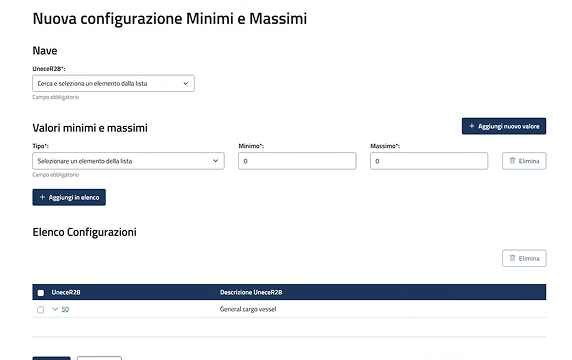
Non è possibile inserire più valori per la stessa tipologia (ad es. passeggeri) relativi alla medesima nave. Per ogni categoria è consentita una sola configurazione per ciascuna nave.
Possibilità di eliminazione
Sarà possibile eliminare:
- una o più configurazioni per UneceR28 selezionandole tramite checkbox e cliccando il pulsante "Elimina";
- singolarmente i tipi valore presenti all'interno dell'UneceR28, cliccando i pulsanti con l'icona del cestino in corrispondenza del tipo valore che si vuole eliminare;
- singolarmente gli Statcode5 presenti all'interno del tipo valore, cliccando i pulsanti con l'icona del cestino in corrispondenza dello Statcode5 che si vuole eliminare.
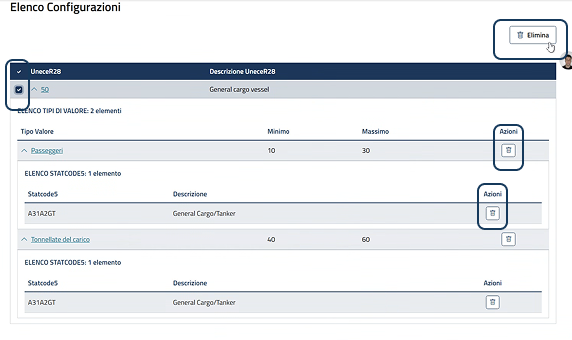
Verifica e salvataggio
Dopo aver verificato il corretto inserimento dei valori, per proseguire con il salvataggio degli stessi cliccare il pulsante "Salva" o annullare quanto inserito cliccando il pulsante "Annulla".
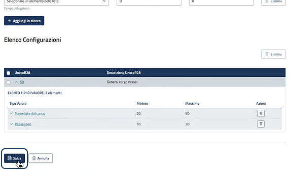
Finestra di conferma salvataggio
Dopo aver cliccato il pulsante di salvataggio, il sistema mostra una finestra di conferma. Cliccare il pulsante "Conferma" per completare la configurazione Minimi e Massimi. Dopo aver cliccato il pulsante di annullamento, il sistema porterà l'utente alla pagina "Minimi e Massimi".
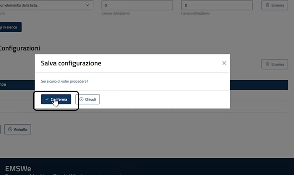
02.
Ricerca e Visualizzazione
Una panoramica sulla ricerca e consultazione delle configurazioni di Minimi e Massimi.
Punto di accesso
La voce di menù
Dalla dashboard, è possibile accedere alle principali sezioni tramite le voci di menu.
Menu a tendina
Cliccando sulla voce "Configurazioni" viene visualizzato un menu a tendina, da cui è possibile accedere a "Minimi e Massimi".
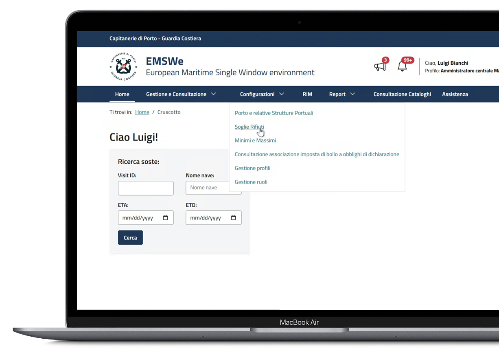
Ricerca e configurazione
Funzionalità in pagina
È possibile avviare la ricerca utilizzando i filtri disponibili. La schermata è suddivisa nelle seguenti tre sezioni:
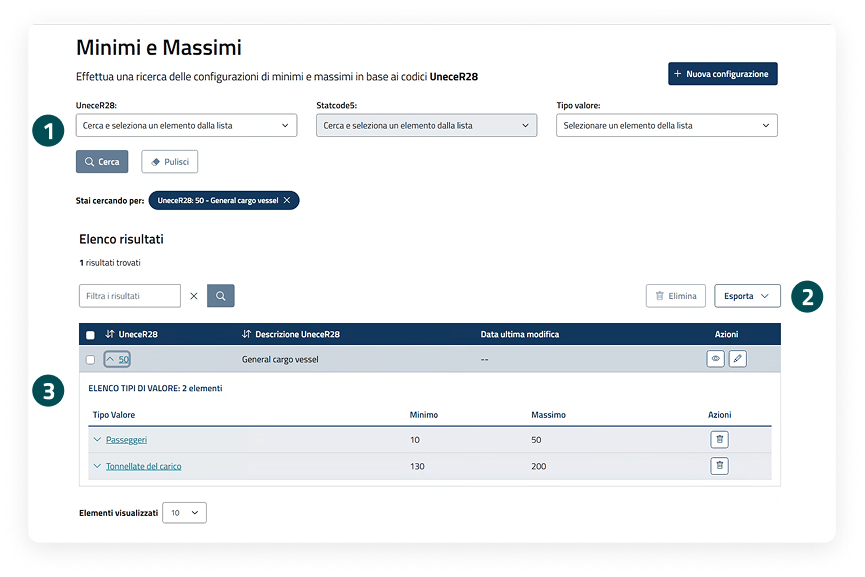
Filtri di ricerca
La sezione di ricerca consente di ricercare le configurazioni valorizzando il campo "UneceR28" e "Tipo valore". Dopo aver selezionato il campo UneceR28 il campo "Statcode5" sarà attivo e pre-filtrato in base alla tipologia di Unecer28 selezionata. È necessario specificare almeno un campo per avviare la ricerca. Avviare la ricerca attraverso il pulsante "Cerca" e pulire i filtri tramite il pulsante "Pulisci". I filtri applicati sono visualizzati e cancellabili.
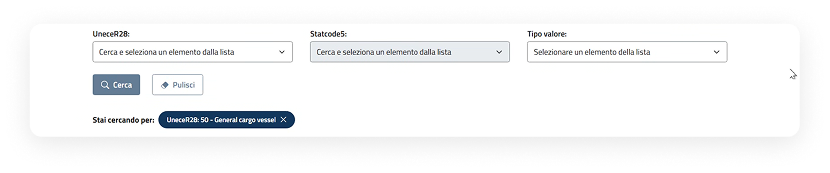
Azioni sulla tabella
È possibile esportare i risultati di ricerca attraverso il pulsante "Esporta" e, dopo aver selezionato una o più configurazioni, è possibile eliminare tramite il pulsante "Elimina". È possibile filtrare ulteriormente i risultati di ricerca valorizzando il relativo campo.
Visualizzazione configurazioni tramite tabella
I risultati della ricerca vengono presentati in una tabella, mostrando le informazioni principali e le azioni disponibili per singolo UneceR28: visualizzazione e modifica della configurazione. L'elenco delle varie tipologie di valori con i relativi Statcode5 associati è solo visualizzabile tramite l'apertura dei rispettivi accordion.
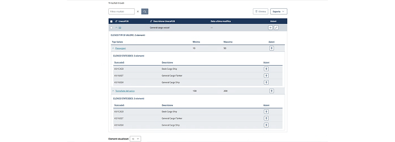
Visualizzazione dettaglio Configurazione Minimi e Massimi
All'interno della pagina sono consultabili le seguenti informazioni:
- Data creazione;
- UneceR28;
- Lista valori
- Tipo Valore
- Elenco Statcode5.
- Tipo Valore
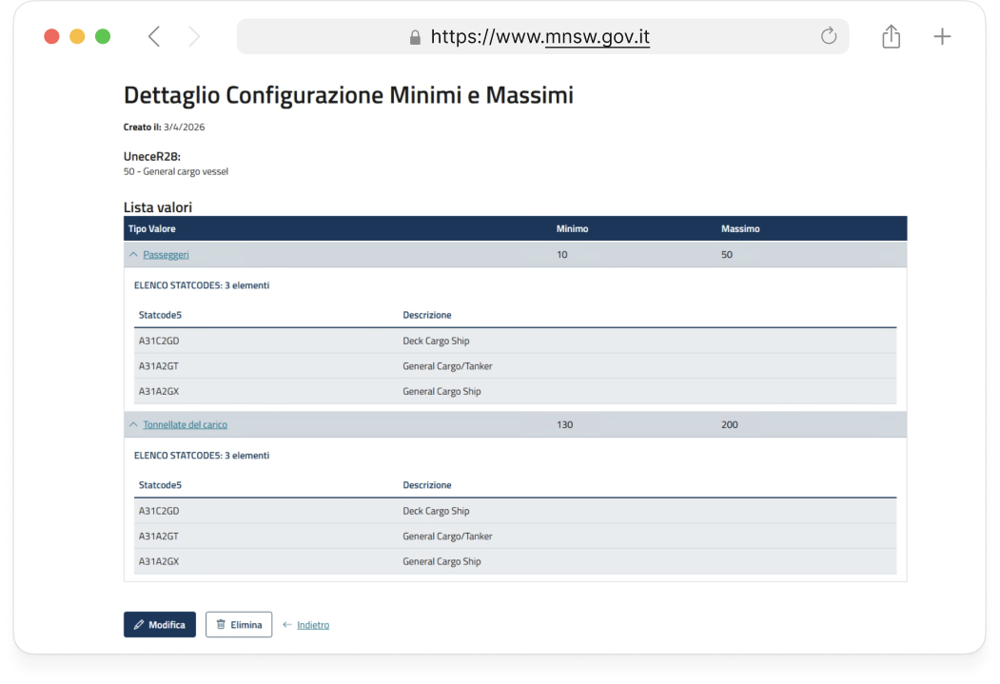
Possibili azioni sulla Configurazione
"Modifica" per aggiornare la configurazione o "Elimina" per cancellarla.
03.
Modifica configurazione
Panoramica sulle modalità di modifica delle configurazioni Minimi e Massimi.
Punto di Accesso della modifica di una configurazione Minimi e Massimi
Attivazione "Modifica" dall'elenco risultati di ricerca
Nell'elenco risultati della ricerca è possibile accedere al dettaglio in modalità modifica cliccando sull'"icona della matita".
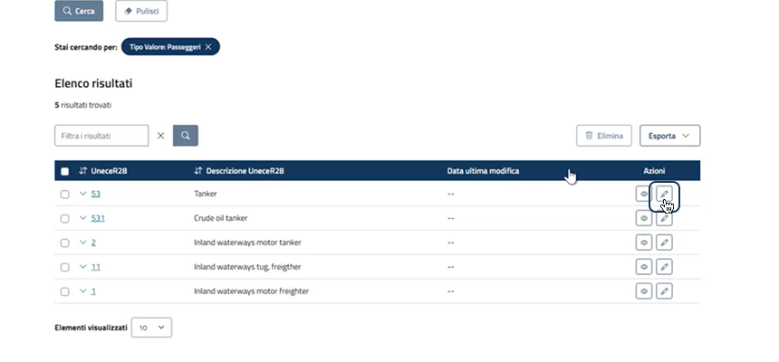
Attivazione Modifica da pagina di dettaglio della configurazione
Nell'elenco risultati della configurazione è possibile accedere al dettaglio in modalità visualizzazione cliccando sull'"icona dell'occhio". All'interno del dettaglio, per procedere con la modifica sarà necessario cliccare sul pulsante "Modifica".
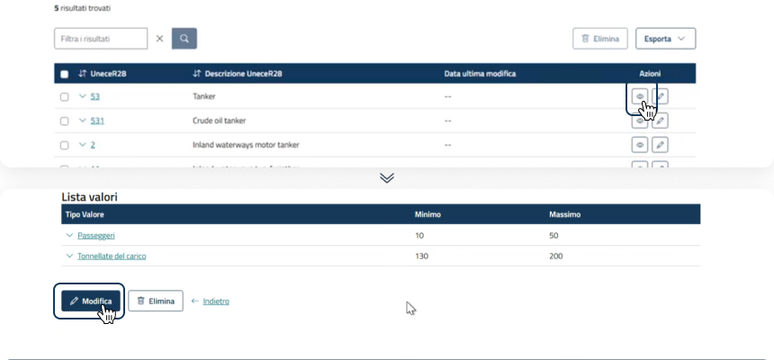
Passaggi per modificare una configurazione
Dopo aver cliccato il pulsante "Modifica", segui tutti i passaggi indicati a sistema e inserisci le informazioni necessarie per completare la modifica della configurazione.
Modifica della configurazione selezionata
Le informazioni modificabili sono: Tipo valore, Minimo e Massimo. Sarà possibile eliminare il Tipo Valore cliccando il pulsante con l'icona del cestino o aggiungere un nuovo valore cliccando il pulsante "Aggiungi nuovo valore".
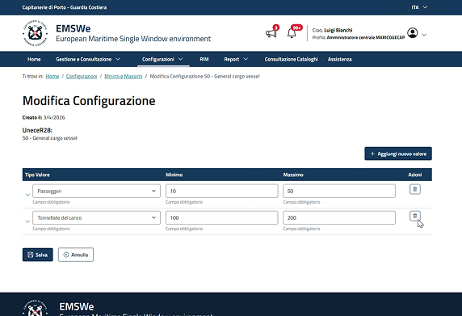
Modifica degli Statcode5 associati al tipo valore
È possibile espandere l'elenco degli Statcode5 associati al tipo valore cliccando sull'icona della freccia. All'interno dell'elenco si può procedere con la selezione/deselezione dei valori presenti. Dopo aver apportato le modifiche, è possibile salvare la configurazione cliccando su "Salva".
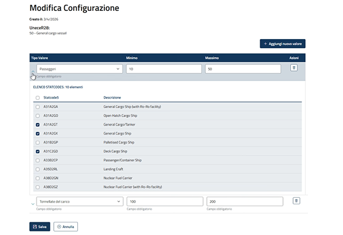
Finestra di conferma e successo
Il sistema mostra una finestra di conferma, chiedendo all'utente se è sicuro di salvare la configurazione. Infine, dopo aver cliccato il pulsante "Conferma", il sistema informerà l'avvenuto salvataggio della configurazione.
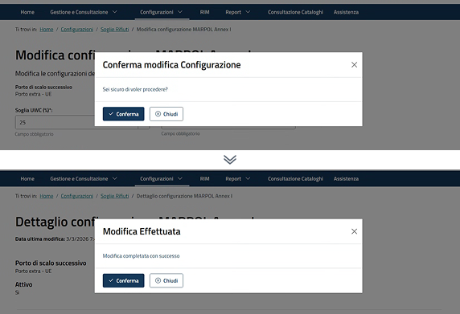
04.
Elimina configurazione
Panoramica sulle modalità di cancellazione delle configurazioni Minimi e Massimi.
Passaggi per eliminazione configurazione da tabella
Dopo aver salvato una configurazione, l'utente può eliminare una o più configurazioni tramite i seguenti passaggi:
Eliminazione in tabella
Nell'elenco risultati della ricerca è possibile eliminare una o più configurazioni dall'elenco selezionandole tramite checkbox e successivamente cliccando sul pulsante "Elimina".
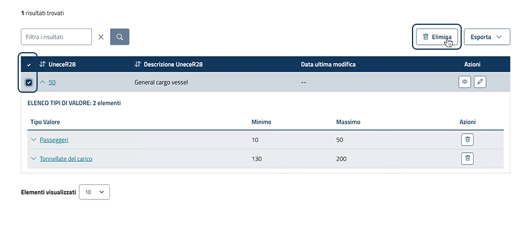
Finestra di conferma eliminazione
Dopo aver cliccato il pulsante, il sistema mostra una finestra di conferma dell'eliminazione. Cliccare il pulsante "Elimina configurazione" per proseguire.
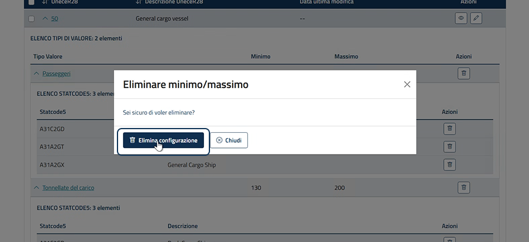
Eliminando la configurazione principale, vengono rimossi automaticamente tutti i valori associati.
Passaggi per eliminazione configurazione da dettaglio
Dopo aver salvato una configurazione, l'utente può eliminare una o più configurazioni tramite i seguenti passaggi:
Pulsante dettaglio
Nell'elenco risultati della ricerca è possibile accedere al dettaglio cliccando il pulsante con l'"icona dell'occhio".
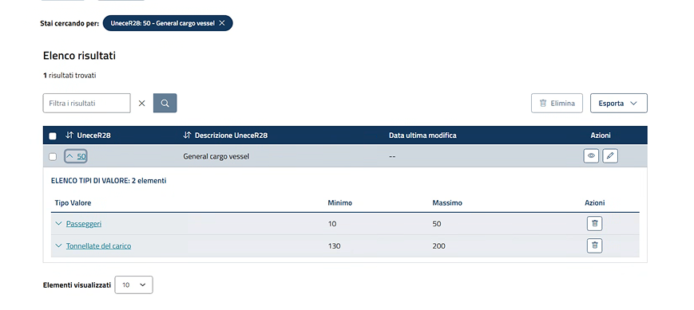
Elimina configurazione e finestra di conferma
Dopo aver cliccato il pulsante "Elimina", il sistema mostra una finestra di conferma dell'eliminazione. Cliccare il pulsante "Elimina configurazione" per proseguire.
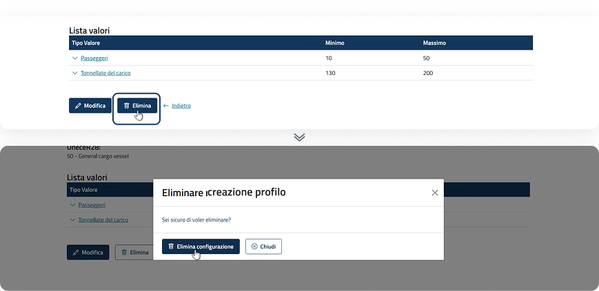
Eliminando la configurazione principale, vengono rimossi automaticamente tutti i valori associati.
Passaggi per eliminazione tipologia valore
Dopo aver salvato una configurazione, l'utente può eliminare la tipologia valore tramite i seguenti passaggi:
Eliminazione in tabella valore
Nell'elenco risultati della ricerca è possibile eliminare la tipologia valore all'interno di un UneceR28 dall'elenco cliccando sul pulsante con l'icona del cestino.
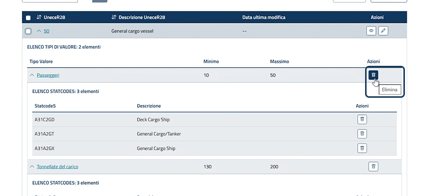
Finestra di conferma eliminazione
Dopo aver cliccato il pulsante, il sistema mostra una finestra di conferma dell'eliminazione. Cliccare il pulsante per confermare l'eliminazione.
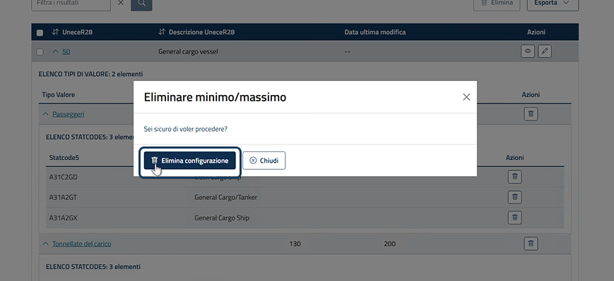
Passaggi per eliminazione Statcode5 in elenco
Dopo aver salvato una configurazione, l'utente può eliminare gli Statcode5 presenti in elenco valore tramite i seguenti passaggi:
Eliminazione in tabella valore
Nell'elenco risultati della ricerca è possibile eliminare lo Statcode5 associato al tipo valore all'interno di un UneceR28 dall'elenco cliccando sul pulsante con l'icona del cestino.
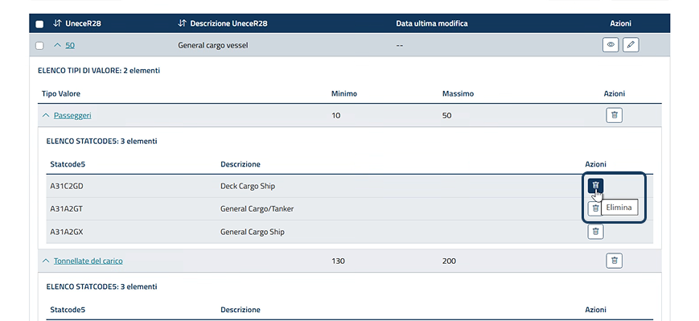
Finestra di conferma eliminazione
Dopo aver cliccato il pulsante, il sistema mostra una finestra di conferma dell'eliminazione. Cliccare il pulsante per confermare l'eliminazione.
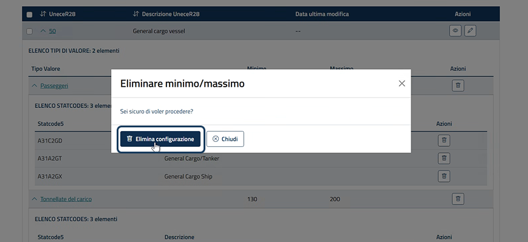